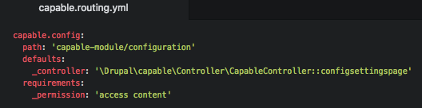
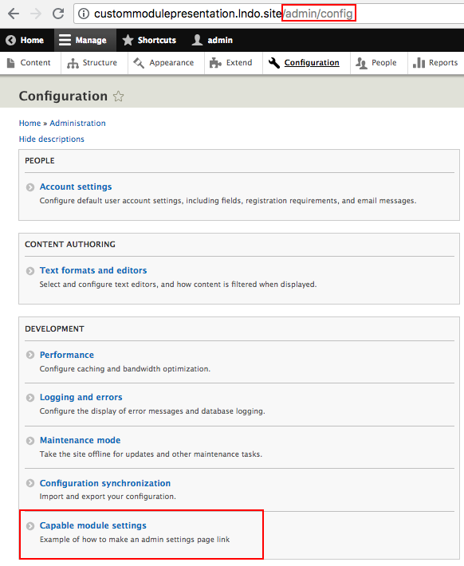
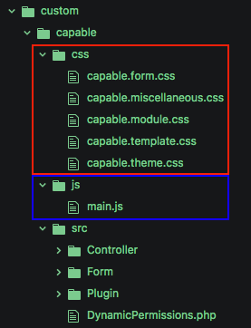
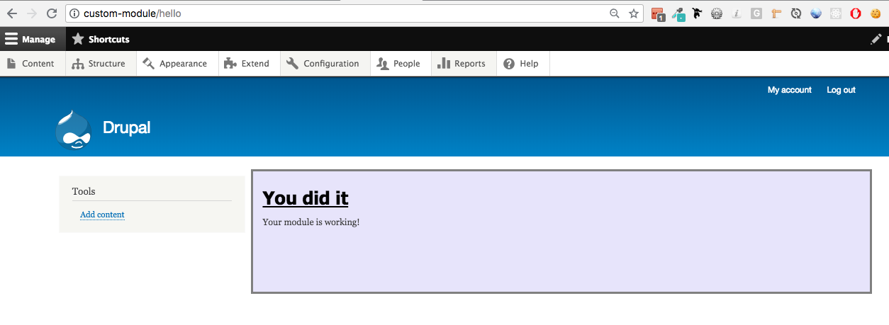
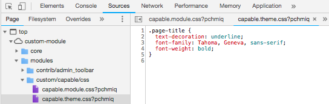
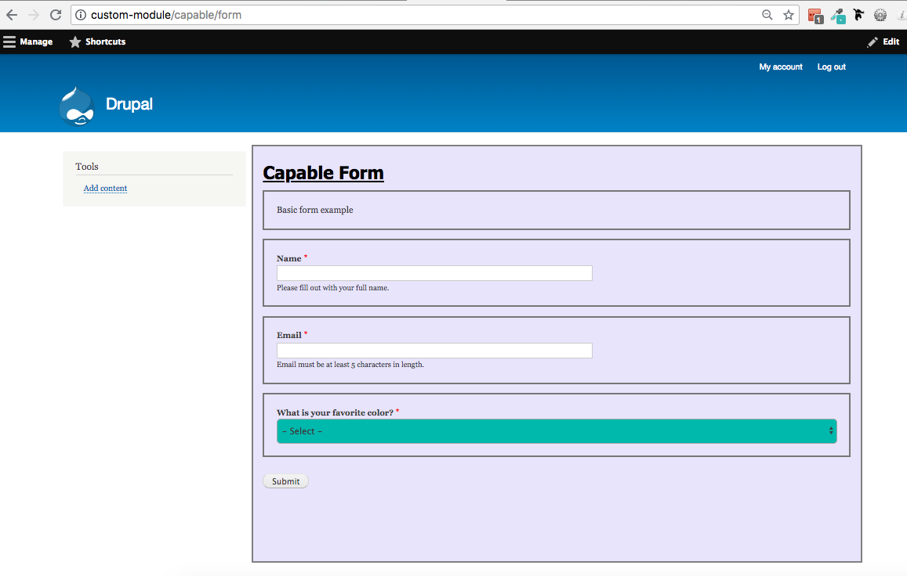
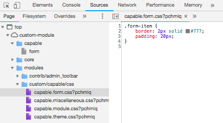
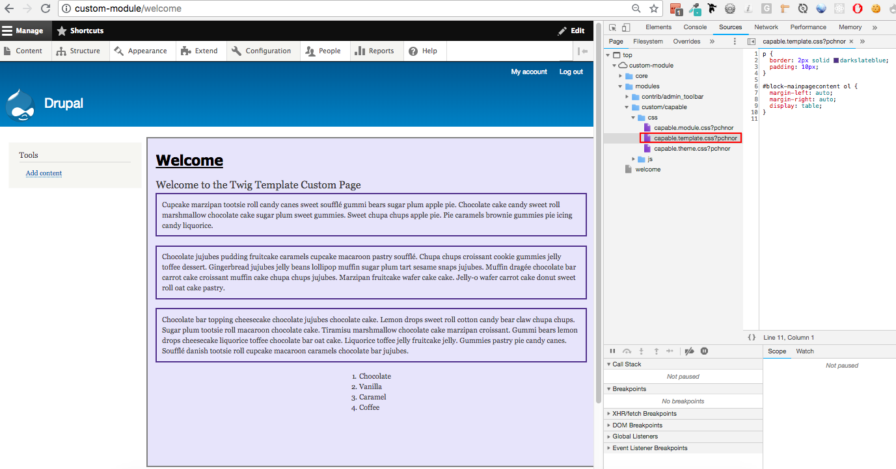

Drupal 8 Custom Module Architecture
What’s Going On?
Lindsay Gaudinier at Hook 42
About me
- Developer at Hook 42
- Swimming, cats, and the internet

The Thought Behind the Talk
I had to create a custom module for the first time, and I had only modified code in the past

I didn't want to just know how to make a custom module, I wanted to know the answers to all my why questions
Quick note: sometimes words are mentioned before they are defined. Please have patience.
Do you need a custom module?
- 5,500 + Drupal 8 contrib modules with security updates and help from the Drupal universe
- Might have a unique problem that contrib doesn't solve
- Contrib module might be too bulky and hurt site performance
- Bring in the functionality of many contrib modules into one custom module
We can't just start with the list of files
Nothing is ever that easy.

PSR-4: Improved Autoloading
- PSR stands for PHP Standard Recommendation
- PSR is a PHP specification that is published by the PHP Framework Interop Group (php-fig) who's focus is to move "PHP foward through collaboration and standards"
- Drupal 8 implements the PSR-4 standard for namespaces and autoloading
- PSR-4: "Autoloaders remove the complexity of including files by mapping namespaces to file system paths."

Autoloading
- Autoloading is capability of loading and linking portions of a program automatically when needed. The autoloader searches through a path of directories and finds the code that defines the subroutine (method/function).
- Autoloading means your code does not need to include a long list of source files in your php file
- The magic of autoloading works because of namespacing
Namespacing
- "Namespaces are commonly structured as hierarchies to allow reuse of names in different contexts." - Wikipedia
- Namespacing helps you avoid name collisions if you repeat the name for a function/class that was declared before
- Eliminates need for super long class names, points to where in the code you can find the function source
Composer
- Dependency/package manager: software the automates the process of installing upgrading, configuring and removing software.
- Composer is a dependency manager for PHP, that assists with locating, downloading, validating, and loading packages and ensures you have the correct package version
Symfony
- Symfony is a PHP framework and a set of reuasable PHP components and libraries
- Defined as a MVC (Model, View, and Controller) framework
- Components are standalone PHP libraries that generate specific features
Some Symfony Components
- ClassLoader: provides tools to autoload classes and cache their locations for performance
- Console: helps you create command line interfaces
- CssSelector: converts CSS selectors to XPath (XML Path language) expression
- DependencyInjection: lets you standardize and centralize the way objects are constructed
- EventDispatcher: lets components communicate with each other
- HttpFoundation: defined an object-oriented layer for the HTTP specification
- HttpKernel: converts a HTTP Request into a HTTP Respose by using a EventDispatcher component
- Process: executes commands in subprocesses, creates APi for shell executions https://symfony.com/doc/current/components/process.html
- Routing: maps an HTTP request to a set of configurable variables
- Serializer: turn objects into specific formats (YAML) and specific formats into objects
- Translation: provides tools for internationalization
- Validator: validates following JSR 303: Bean Validation
- Yaml: parses YAML strings to conver them to PHP arrays, and vice versa
Why are you telling me this?

- Autoloading and namespacing play an important role in how and why we structure files and code in a module
- While Drupal Core uses Composer, you can also manage dependencies for your custom module with Composer
- While Drupal 8 does NOT use the Symfony framework, D8 uses some Symfony components
Types of files:
- YAML (YAML Ain't Markup Language): .yml, .yaml
- PHP: Hypertext Preprocessor: .php
- Markdown: .md
- Javascript Object Notation (JSON): .json
- Module: .module
- Javascript: .js
- CSS (Cascading Style Sheets): .css
Naming the module
- Start with a letter
- Contain only lower-case letters and underscores
- No spaces
- Unique name
- Does not contain any reserved words: src, lib, vendor, assets, css, files, images, js, misc, templates, includes, fixtures, Drupal
The Module Skeleton

Capable Module
modules /contrib /custom /capable README.md STANDARDS.md TESTING.md capable.api.php capable.data.inc capable.info.yml capable.libraries.yml capable.links.menu.yml capable.module capable.permissions.yml capable.routing.yml capable.services.yml capable.task.yml composer.json /config /install capable.settings.yml /schema capable.schema.yml /css capable.form.css capable.miscellaneous.css capable.module.css capable.template.css capable.theme.css /js main.js /src /Controller CapableController.php /Entity Robot.php /Form CapableForm.php /Plugin /Block CapableBlock.php /templates welcome.html.twig /tests /src /Functional ExampleFunctionalTest.php /Kernel ExampleKernelTest.php /Unit ExampleUnitTest.php
capable.info.yml
- The info.yml file lives in your root folder and tells Drupal about your module
- The info.yml file information can be found on the Drupal admin pages (/admin/modules)
- Technically, the only required file in your module (although the module won't do anything)

What's going on?

capable.info.yml complete example

-
depedencies:
- List the other module(s) that your module depends on to work.
- Namespacing: {project}:{module}
- {project} is the name as it appears in the Drupal.org url (https://www.drupal.org/project/token)
- {module} is the module machine name (token)
- Can also include version restrictions: token:token (8.x-1.3)
-
test_dependencies:
- List the module(s) you need to run automated tests
- Same namespacing as dependecies: {project}:{module}
-
configure:
- Specify the route to a configuration form
- This will show on the /admin/modules pages when you expand [this needs different words or an image]
-
php:
- Defines the minimum PHP verison that your module requires
- Can't enable the module if your PHP version is older
-
hidden:
- hidden: true, will hide your your module on the /admin/modules page
- Why would you hide your module? Perhaps it only implements tests and you don't want it disabled
The Controller File
- Following PSR-4, the controller file will live inside a folder called src, and then in a folder called Controller
- src stands for source
- Need to declare a namespace at the top.
- Namespace format: Drupal\[module name]\Controller;
- The controller file will work with the router file
CapableController.php

-
namespace Drupal\capable\Controller: declaring the namespace for the capable Controller class
- this must be done before any other code (except a declare statement) -
use Drupal\Core\Controller\ControllerBase: importing (aliasing) the Drupal core ControllerBase, which is being extended by CapableController class.
- Do not include a leading \
- Only specify one class per use statement.
- No clear rule to order for multiple use statements.
- Final use statement should habe a blank line underneath it. - class CapableController extends ControllerBase: creation of CapableController class that extends Drupal's core ControllerBase class
- public function content(): take note of the name of the function, this will come back in the routing file
The Routing File
- A route is a path where Drupal returns some sort of content
- The router determines which code should be run to generate the response.
- The routing system is responsible for matching paths to controllers.

capable.routing.yml

Routing + Controller Working Together
Parameters in Routes
- Parameters are used for URLs that may contain dynamic values.
/parameters/[partial] would work for both /parameters/hello and /parameters/goodbye - The [partial] element in the url is called a slug, and is is avaible as a $partial in the controller method
- You can even have multiple parameters on a single route: product/[product#]/[color]
Parameters in Routes
All the capable.routing.yml properties
- path: Required, must begin with a forward slash (/), first item of the path must NOT be dynamic
- defaults: Requied, defines the default properties of a route.
-
_controller: A callable value that returns:
- a renderable array, rendered into HTML and used as the content of a normal Drupal page
- an Symfony\Component\HttpFoundation\Response object, example for a non-HTML XML feed
- namespace: \Drupal\[module name]\Controller\[ClassName]::[method]
- path: [module name]/src/Controller/[ClassName].php that contains a build() method
- service: controller.test[method], where controller.test is a service definedint he dependency injection container // THIS NEEDS AN EXPLANATION
- _form:
- _entity_view:
- _entity_list:
- _entity_form:
- _title:
- _title_arguments:
- _title_context:
-
_controller: A callable value that returns:
- methods: Optional, match the method of the incoming request. Should be enclosed in brackets, and separated by commas
- requirements:
- _permission:
- _role:
- _access:
- _entity_access:
- _custom_access:
- _format:
- _content_type_format:
- _module_dependencies:
- _csrf_token:
- options:
- _admin_route:
- _auth:
- _theme:
- no_cache
- parameters
Module Menu Link
Menu link to the module in the Development section of the Administration >> Configuration (/admin/config)
Module Menu Link
Module Menu Link Screenshot
Module Menu Link Flexibility
You can also set the [module].links.menu.yml to link to external links or to an internal path
External Link
Internal Link
capable.module
- The capable.module file is optional
- Used for implementing hooks
Introduction to Hooks
- Hooking: range of techniques that lets you change the behavior of applications by intercepting events passed between software components.
- Hook: the code that handles this interception
- Hooks in Drupal let modules interact with other modules or Drupal core
- Hooks can be thought of event listeners that fire off when a certain event triggers them, and can be used at various code execution point
- In Drupal 8, some hooks have remained the same, some have been removed, others have been modified, and some have been added. For the entire list of core hooks, click here.
-
To implement a hook, replace the hook name of the function with the name of your module:
- hook_help() → capable_help()
capable.module
composer.json
- If your module has a dependency to a third party library hosted on Packagist, you can define this dependency
- Also declared dependencies in your info.yml file, but composer.json can let you get more specific with constraints
- If your module does not have any dependencies, composer.json is not required, but having it will not have a negative impact
composer.json
Composer
Forms
-
Introduction to Form API
- API: application programming interface is a set of functions and tools for building software with clearly defined methods of communication
- Need to idenfity the type of form you need
- General form: extend Form Base
- A configuration form that lets administrators update a module settings: extend ConfigFormBase
- A form for deleting content or configuation with a confirmation step: extend ConfirmFormBase
-
Required methods:
- getFormId()
- buildForm()
- validateForm()
- submitForm()
CapableForm.php

CapableForm.php
Configuration
- Configuration is a place to store information you would like to synchronize from development to production. This information can be used in your own plugins, entities and settings.
-
Lives under a /config directory
- /install directory
- Configuration defaults live under the /config/install directory
- capable.settings.yml: This file stores configuration defaults, which are assigned to the correct fields via the next file
-
/schema directory
- Schema: the organization of the structure of the database
- capable.schema.yml: define a custom table for your module
Entities
Entities are objects that are used for persistent storage of content and configuration informationPermissions
- Permissions are defined in a [modulename].permissions.yml instead of using hook_permission()
- Static permissions: do not depend on system information
- Dynamic permissions: generated by system specific information (node type, user role)
Static Permission
Routing Permissions
Dynamic Permissions


Dynamic Permissions


Dependency Injection
- A object oriented programming software design process that supplies a resource the code it requires
- The required resource is called a dependency
- definition of service
Services
https://www.drupal.org/docs/8/api/plugin-api/why-pluginsPlugins and Custom Blocks
- Plugins are small pieces of functionality that are swappable
- Plugins that perform similar funcitonality are of the same plugin type
- Blocks are instances of the block plugin.
-
Plugin code must live in /src/Plugin/[plugin_type/Example.php
- Blocks: /src/Plugin/Block/*
- Field formatters, Field widgets: /src/Plugin/Field/*
- Views plugins: /src/Plugin/views/*
CapableBlock.php
Module Theming
Libraries
- A library is a "collection of implementations of behavior... that has a well-defined interface by which the behavior is invoked." - Wikipedia
- Define one or more libraries (assets) in [modulename].libraries.yml
- Must explicitly tell Drupal the libraries you want it to load, including CSS and JS files
- Drupal 8 no longer loads jQuery on all pages on default, so you must tell Drupal that your library has a dependency on jQuery.
- Attach the library to a render array in a hook
capable.libraries.yml
Load the Library
-
Attach a library in several ways:
- hook_element_info_alter(): a module implements this hook to alter the element type defaults defined by a module
- Render array: a structured array that provides data (probably nested) along with hints as to how it should be rendered
- hook_page_attachments(): conditionally add assets to a page
- template_preprocess_hook(): lets modules preprocess theme variables for a specific theme hook
- {{ attach_library(‘example/example’) }}: attaches an asset to a the twig template
-
Note:
drupal_add_css(),drupal_add_js()anddrupal_add_library()were replaced with#attached
Globally Load a Library
Attach the library to all pages with hook_page_attachments in capable.moduleGlobally Load a Library
 Load Library to a Form
Attach the library in the render array buildForm function in the CapableForm.php file
$form['#attached']['library'][] = 'module-name/library-name'
Load Library to a Form
 Load a Library to an element
Attach a library to a specific#type: the library only loads if that #type exists
Load a Library to an element
Load a Library to a twig template
{{ attach_library('your_module/library_name') }}Load a Library to a twig template
CSS
- All styles should be placed under the css folder
-
Drupal 8 folows SMACSS-style categorization of its CSS rules
- Base: CSS reset/normalize plus HTML element styling. Weight: -200
- Layout: macro arrangement of a web page, including any grid systems. Weight: -100
- Component: discrete, reusable UI elements. Weight: 0
- State: styles that deal with client-side changes to components. Weight: 100
- Theme: purely visual styling (“look-and-feel”) for a component. Weight: 200
-
CSS file organization
-
module_name.module.css: minimal styles needed to get the module's functionality working, includes layout, component and state styles. -
module_name.theme.css: extra styles to make the module's functionality aesthetically pleasing, consists of theme styles. -
module_name.admin.css: minimal styles needed to get the module's admin screens working, includes layout, component and state styles. On admin screens, the module may choose to load the *.module.css in addition to the *.admin.css file. -
module_name.admin.theme.css: extra styles to make the module's admin screens aesthetically pleasing, consists of theme styles.
-
CSS Weights
Javascript
jQuery
- jQuery is a fast, small, and feature-rich JavaScript library
- jQuery does not automatically load on all pages in D8
jQuery
Configurable Javascript
- Use configurable JavaScript when you use JavaScript that works with computed PHP information
- Need to attach drupalSettings to the library and attach that library
Configurable Javascript
JavaScript: CDN / Externally hosted libraries
Improves load speed, but will need to declare that the library is external
Twig Templates
- Twig is a flexible templating engine for PHP, helps you create custom pages
- The *.html.twig files have replaced the *.tpl.php files of Drupal 7
-
Steps to create custom twig templates for custom module
- Define the hook_theme in the .module file
- Call the template
- Create the twig template, located in a templates folder
1. Define the hook_theme
2. Call the template
3. Create the twig template
Testing
- QA your module to make sure its working, tests run by Drupal
-
Tests live under the /tests/src folder and then under its relative folder (Functional, Kernel, Unit)
- Unit: tests on functions methods and classes. Extend the base class UnitTestCase
- Kernel: integration test that test on components. Extend the base classes: KernelTestBase and EntityKernelTestBase
-
Functional: test on the complete system. Tutorials for BrowserTestBase and JavascriptTestBase
- BrowserTestBase: test web-based behaviors and interactions. Spins up a complete Drupal installation and veritual web browser, and tests int he virtual web browser.
- JavascriptTestBase: tests how the system works for a user with Javascript enabled.
- Legacy support for Simpletest's WebTestBase framework
Testing
Run the Tests
- Enable the Testing module
- Navigate to admin/config/development/testing
- Select the group name
- Click Run tests
Documentation
- README.md: general information about the module including - Table of Contents, Introduction (summary of the module), Requirements, Recommended modules, Installation, Configuration, Troubleshooting, FAQ and Maintainers
- STANDARDS.md: details coding standards for the module
- TESTING.md: details of how to test the module
All The Sources

General
- https://www.drupal.org/docs/8/creating-custom-modules/a-practical-guide-to-building-basic-drupal-8-modules
- https://docs.acquia.com/en/stable/tutorials/fast-track-drupal-8-coding/define-custom-config-entity/
- https://en.wikipedia.org/wiki/Application_programming_interface
- https://www.drupal8.ovh/index.php/en
- https://www.drupal.org/node/120641
Namespaces
Symfony
Routing
Example Modules:
Hooks
Permissions
- https://www.drupal8.ovh/en/tutoriels/66/create-a-custom-permission-drupal-8
- https://www.aram.cz/article/custom-permissions-drupal-8
- http://kevinquillen.com/drupal/2016/02/21/dynamic-permissions-in-drupal-8
- Programmer's Guide to Drupal: Principles, Practices, and Pitfalls
- Drupal 8: Enterprise Web Development
Plugins and Custom Blocks
Configuration
Composer
Dependency Injection + Services
Forms
Module Theming
- https://en.wikipedia.org/wiki/Library_(computing)
- https://www.drupal.org/docs/8/creating-custom-modules/adding-stylesheets-css-and-javascript-js-to-a-drupal-8-module
- https://www.drupal.org/node/1887922
- https://www.drupal.org/docs/8/creating-custom-modules/adding-stylesheets-css-and-javascript-js-to-a-drupal-8-module
- https://www.drupal.org/node/1887922
- https://docs.acquia.com/tutorials/fast-track-drupal-8-coding/define-custom-template-module-output/
- https://www.drupal.org/docs/8/theming/twig
- https://www.drupal.org/docs/8/theming/twig/create-custom-twig-templates-for-custom-module
- http://cgit.drupalcode.org/examples/tree/js_example
Questions?